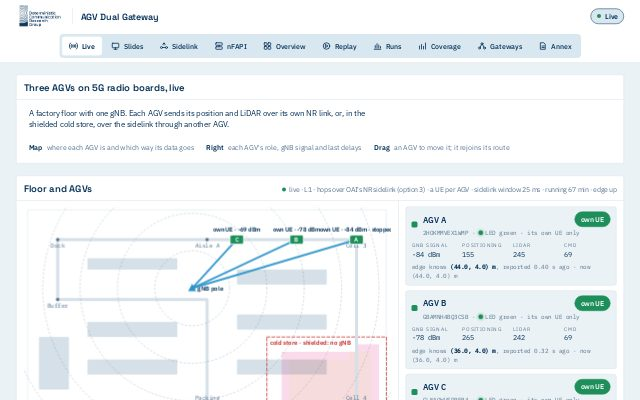
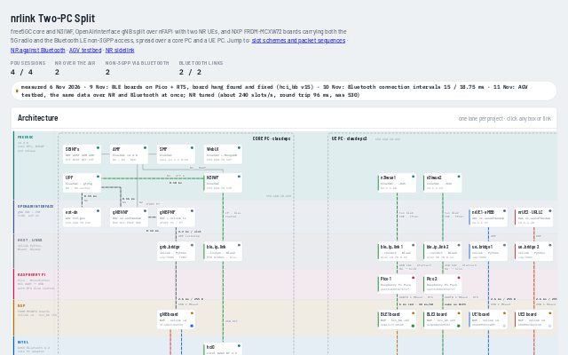
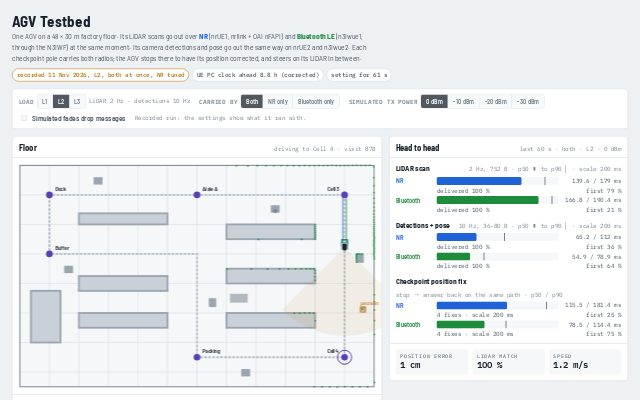
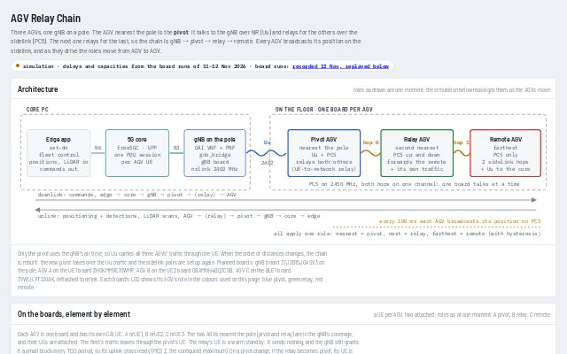
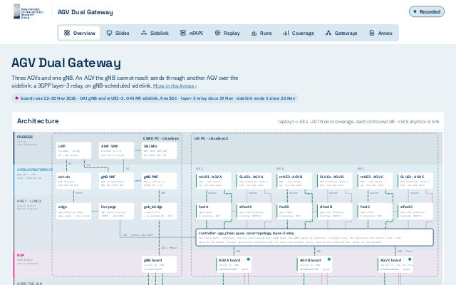
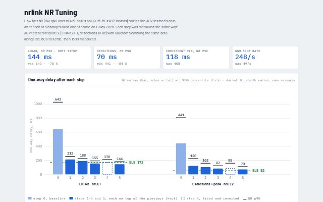
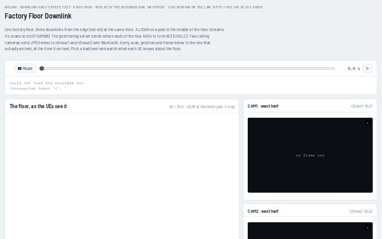
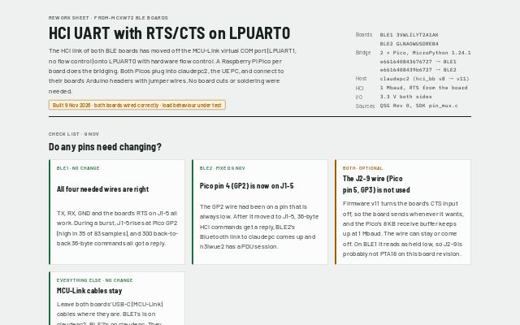

BLE-5G Pages
5G NR over nrlink and Bluetooth LE non-3GPP access on FRDM-MCXW72 boards, free5GC and OpenAirInterface: every page of the testbed, served from the core PC.
built 20 Nov 2026, 07:27

AGV Testbed, live
The running testbed: change the load, mode and radio power, and watch both paths as it happens.

nrlink Two-PC Split
The whole setup over two PCs: architecture, who is connected where, latency per hop, slot schemes, packet sequences, stress tests and the NR against Bluetooth comparison.
updated 12 Nov 2026

AGV Testbed
LiDAR scans over NR and detections over Bluetooth at once: campaign results by load, mode, power and fade, with a replay of the tuned run.
updated 11 Nov 2026

AGV Relay Chain
Three AGVs and a gNB pole: the AGV nearest the pole talks to the gNB and relays the others over a sidelink chain, and the role moves as they drive. Simulated with the boards' measured links.
updated 13 Nov 2026

AGV Dual Gateway
Two AGVs connected to the gNB as gateways, the third one sidelink hop from either and picking one per message: board runs at L1 and L2 across sidelink window widths, with a replay. Now live as a platoon with coverage by position: AGVs lose the gNB in a shielded cold store, relay through another AGV one at a time, now as a 3GPP layer-3 relay (configured thresholds, PC5-S with security, DHCPv4, a relay PDU session, QoS, Remote UE Report to the SMF), with no relayed packets lost; then gNB-scheduled sidelink (mode 1: a slice of the window per AGV, a pool for the remote); every run and what changed; how routes are picked; animated explainers of the sidelink and of the nFAPI adaptation to the boards; packet sequence, slot schemes, traffic flows; full details in an Annex.
updated 20 Nov 2026

nrlink NR Tuning
Each NR optimisation step measured on its own: slot rate and one-way delays, from 643 ms to 144 ms for a LiDAR scan.
updated 11 Nov 2026

Factory Floor Downlink
The factory demo: downlink traffic classes to the UEs and their one-way delays.
updated 9 Nov 2026

MCXW72 HCI Flow-Control Wiring
How each Bluetooth board's HCI UART is wired through a Raspberry Pi Pico with RTS/CTS flow control.
updated 9 Nov 2026